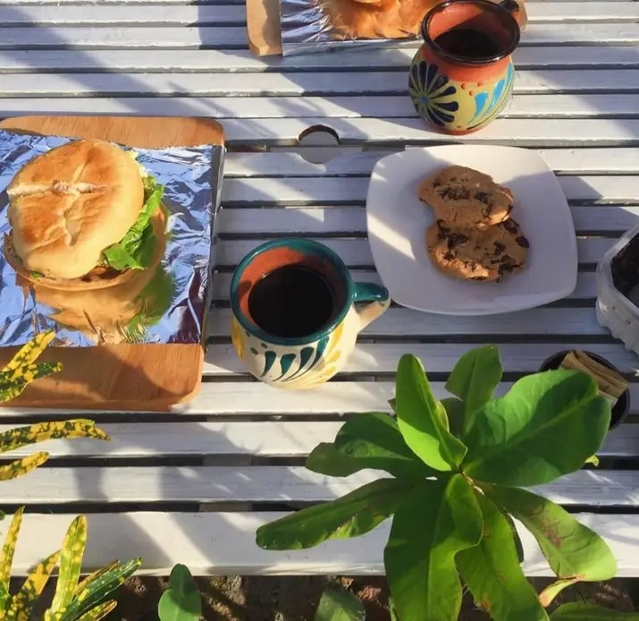

Bienvenido a Cafe Moka donde nuestra mejor mision es dejar una huella en tu corazon, donde hinoptizamos con el olor del cafe tostado y el sabor de un expresso presente. Nuestra cafetería rural es un refugio para quienes buscan calma, conversación pausada y una taza honesta. Aquí no hay prisa. Solo el calor de lo auténtico.
Es un negocio 100% mexicana que se dedica a compartir nuestras raizes en una forma memorable, con los granos de cafe traidos de Yucatan, Veracruz, Oaxaca, Nayarit, Chiapas y Puebla, acompañando tu dia de forma calmada, no solo nos limitamos exclusivamente al cafe tambien incluimos varias bebidas que disfrutaras al probarlas.
Ofrecemos la mejor experiencia en un establecimiento agradable, tranquilo, calido para cualquier acividad social, laboral, estudiantil